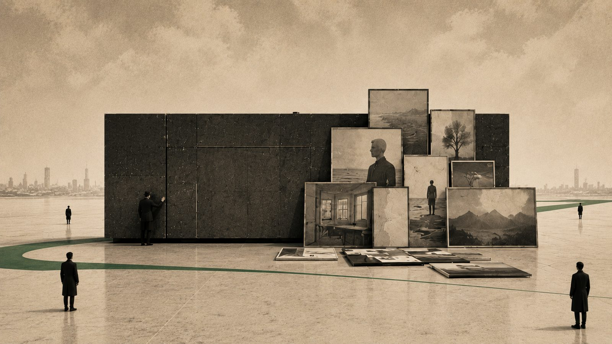
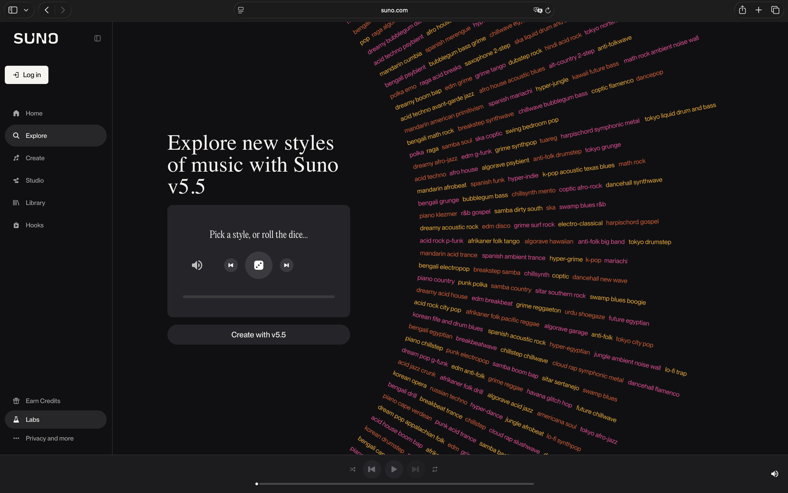

AI를 열어둘수록 선명해지는 창작자의 자리 (2) - 남는 IP는 취향을 재현하는 엔진이다

만들어진 노래를 한 번 듣고 버리는 시대가 온다면, 반복 소비를 전제로 세워진 지금의 콘텐츠 비즈니스는 무엇으로 지속될까. 지난 6월 대담의 주제는 AI 시대의 IP 비즈니스였다. 나는 그 자리에서 남는 것은 완성된 결과물이 아니라 그 취향을 다시 만들어내는 IP 생성 엔진이라고 말했다. 이건 새로운 기술을 아느냐의 문제가 아니라, 무엇을 IP로 보느냐는 관점의 문제다.
시리즈 안내 : 이 시리즈는 2026년 6월 12일 한남동에서 열린 뉴타입 엔터 서밋 2026의 대담을 1인칭으로 다시 정리한 것이다. 'OK, Computer'라는 화두 아래 AI 시대의 IP 비즈니스를 다뤘고, 사회는 차우진이 맡았다. 행사는 엔터문화연구소가 주최했으며, 영문 이름은 Neo Vibe Lab이다. 소개는 neovibelab.com/summit 에 있다. 이 글은 세 편 중 두 번째다.
01한 번 듣고 버리는 노래
앞 편은 하나의 질문을 남기고 끝났다. 문서도 앱도, 어쩌면 음악까지 한 번 쓰고 버려지는 시대에 무엇이 IP로 남는가. 지난 편에서 나는 고치는 것보다 새로 만드는 편이 빠르고 싸서 결과물이 자꾸 일회용이 되어 간다고 설명했다. 구독하던 서비스를 대신할 작은 앱을 만들어 쓰다 버리고, 더 나은 기능이 필요하면 고치는 대신 새로 만든다. 음악이라고 예외일까. 요즘 도구로 만들어진 노래는 어떤 의미에서 한 번 듣고 마는 음악에 가깝다. 계속 듣지 않기 때문이다. AI가 더 깊이 일상이 되면, 언젠가 한 번 만들어 듣고 흘려보내는 노래도 나올지 모른다.
문제는 여기서 드러난다. 대담을 진행한 엔터문화연구소 대표 차우진은 콘텐츠 비즈니스가 결국 히트작 위에 서 있고, 흥행은 같은 것을 여러 번 소비할 때 생기는데, 반복 소비가 사라진 자리에서 이 사업이 어떻게 이어질 수 있느냐고 되물었다. 나로서도 곧장 답하기 어려운 질문이었다.
나는 그 질문을 듣고 반복이 정말 사라지는 것인지부터 다시 생각해보게 됐다. 같은 음악 파일을 열 번 듣는 대신, 같은 취향에서 그때그때 다른 열 곡을 만들어 듣는다면 반복의 단위가 달라진 것에 가깝다. 되풀이되는 것이 완성된 파일에서 그 파일을 고르게 만든 취향으로 옮겨간다. 한 번 울리고 사라지는 음악과 오래 남는 IP는 서로 반대처럼 보이지만, 결과가 아니라 결과를 만드는 기준이 남는다고 보면 둘은 함께 성립할 수 있다.
02남는 것은 취향을 만드는 IP 생성 엔진
그렇다면 IP는 무엇일까. 차우진은 IP란 결국 완성된 결과물이 아니라 그것을 만들기까지 쌓은 노하우와 과정이 아니냐고 되물었다. 이 질문을 지금 다루는 콘텐츠의 조건에서 다시 생각해봤다. 디지털로 유통되고 온라인에서 소비되며, 점점 더 AI가 생성하는 콘텐츠다. 그런 세계에서 끝내 남는 것은 완성된 한 곡보다 그 곡이 품은 취향을 언제든 다시 만들어낼 수 있는 데이터셋과 개인화된 생성 모델이라고 본다. 나는 이것을 IP 생성 엔진이라 부른다. 완성된 한 곡이 결과라면, IP 생성 엔진은 그 결과를 몇 번이고 다시 만들어내는 틀이다. 이 생성 엔진 자체가 IP가 될 수 있다는 이야기다.
여기서 IP 생성 엔진은 모델 파일 하나만을 뜻하지 않는다. 무엇을 재료로 삼고, 어떤 결과를 버리며, 남은 것 가운데 무엇을 자기 것으로 고르는지까지 포함한다. 데이터셋과 개인화된 생성 모델이 가능성의 범위를 만들고, 취향과 의도가 그 안에서 같은 결을 반복해 찾아낸다. 같은 범용 모델을 써도 사람마다 다른 결과가 나오는 이유가 여기에 있다. 이 요소들이 함께 묶일 때 비로소 한 사람의 IP 생성 엔진이 된다.
LLM과 같은 범용 모델 자체를 IP라고 보기는 어렵다. 누구나 같은 모델을 쓰고, 잠재력의 범위가 너무 넓어 어느 한 사람의 것으로 읽히지 않기 때문이다. 실제 콘텐츠 서비스에서 더 어려운 일도 가능성을 키우는 것보다, 그것을 일관된 캐릭터와 스타일로 좁혀 되풀이하는 쪽이다. 생성 시대의 IP는 무한한 잠재력 전체가 아니라, 그중 자기 방식으로 다시 불러낼 수 있는 범위에서 생긴다.
대담 전 사전 인터뷰에서는 미드저니의 스타일 레퍼런스 코드를 예로 들었다. 숫자로 된 --sref 코드를 프롬프트에 넣으면 피사체가 달라져도 색, 재료, 질감, 조명처럼 그 스타일의 결을 다시 불러올 수 있다. 수노에서는 다른 장면을 봤다. 수노 랩스의 Genre Wheel에는 breakbeat balkan brass band, dream pop appalachian folk처럼 익숙한 스타일 단어가 낯선 조합으로 이어져 있다. 휠을 돌리거나 주사위 버튼을 누르고 하나를 고르면 그 조합으로 만든 곡이 재생된다. 사용자가 자기 곡에 붙인 여러 스타일 단어의 조합이 곧 그 곡을 찾아가는 고유한 장르명처럼 작동하는 셈이다. 내가 봤던 V4 시기의 화면은 지금 V5.5로 바뀌었지만, 인상은 같다. 먼저 정해진 장르 안에서 곡을 만드는 것이 아니라 결과에서 드러난 결이 다시 탐색할 수 있는 장르의 입구가 된다. 미드저니의 코드는 같은 결을 다시 불러오는 방법을, 수노의 휠은 결과에서 생긴 결에 이름이 붙는 장면을 보여준다. 둘 다 IP 생성 엔진이 같은 결과를 복제하는 장치가 아니라, 변주 속에서도 알아볼 수 있는 범위를 만들고 확장하는 장치라는 점을 보여준다.

내 관심도 그쪽으로 옮겨갔다. 지난 몇 년간 이미지와 영상, 음악을 생성하는 도구를 붙들고 수없이 실험하면서, 완성된 결과물 하나를 잘 만드는 것보다 그런 결과물을 원할 때 다시 만들어낼 수 있는 IP 생성 엔진을 손에 쥐는 일이 더 중요해졌다. 그래서 나는 이렇게 묻게 됐다. 값이 매겨지고 지켜져야 할 것은 완성된 하나인가, 아니면 그것을 언제든 다시 불러낼 수 있는 IP 생성 엔진인가.
03순서가 뒤집힌 감각
일하는 방식을 두고 흥미로운 장면을 하나 봤다. 머릿속에 가사 한 줄의 심상이 떠오른다. 그 한 문장으로 노래의 후크에 해당하는 가사를 만든다. 이전의 방식대로라면 이건 노래가 되고, 뮤직비디오가 되고, 무대가 되는 순서로 흘렀을 것이다. 그런데 이제는 만드는 값이 워낙 싸져서 순서를 거꾸로 밟을 수 있다. 이 가사로 먼저 키이미지를 만들고, 그 이미지로 곧장 뮤직비디오를 만든다. 음악은 아직 없다. 그러고 나서 AI에게 이 영상에 어울리는 음악을 만들어달라고 부탁한다.
순서를 거꾸로 밟는다고 해서 기획이 없어지는 것은 아니다. 먼저 충분히 볼 수 있는 결과를 만들고, 그 가운데 무엇이 좋은지 고른 뒤, 내가 왜 그것을 골랐는지 거꾸로 찾아간다. 이전에는 결과를 만들기 전에 적어두던 기준이 이제는 결과를 본 다음 추출되기도 한다. 그렇게 발견한 기준을 다시 생성 과정에 넣으면 다음 결과가 달라진다. 결과를 먼저 만들고 그 뒤에서 IP 생성 엔진의 규칙을 찾아내는 셈이다.
멀티모달 능력을 갖춘 AI는 이미지와 문장, 음악을 서로 다른 재료로만 다루지 않는다. 이미지 한 장을 건네고 그 장면을 음악으로 표현해달라고 하면 색과 형태, 분위기에서 음악의 리듬과 질감을 해석해낸다. 그 작동 방식을 보고 있으면 우리가 여전히 낯설게 느끼는 공감각이라는 개념을 떠올리게 된다.
이런 변화는 음악을 만들고 소비하는 방식까지 바꿔놓을지 모른다. 정해진 공정으로 음악을 만들고 차트에 맞춰 알고리즘이 추천하던 방식 대신, 지금 느끼고 떠오른 것을 곧장 음악으로 옮기게 되는 것이다. 그렇게 태어난 음악을 굳이 저장해두고 반복해 듣는다면, 오히려 그게 더 어색하지 않을까. 한순간의 심상에서 태어난 음악이 한 번 울리고 사라지는 편이, 오히려 그 순간의 감각에 더 솔직한 것이 아닐까. 그렇게 스쳐 가는 음악이 내 삶의 감각을 더 풍요롭게 할 수도 있다.
04매번 다르지만 고유한 장르
일회용이면 IP라 부를 수 없고 흥행도 없다는 반론이 자연스럽다. 그런데 잭슨 폴록 같은 작가의 액션 페인팅을 떠올려보자. 판 위에 물감을 뿌리고 돌려가며 즉흥적으로 화면을 만든다. 매번 다른 것이 생겨나지만, 그것은 그 사람의 고유한 장르가 되고 작가의 작품 세계가 된다. 비슷한 방식으로 누가 물감을 뿌리면 아류라 불릴 뿐이다.
고유함은 결과가 매번 같다는 뜻이 아니다. 서로 다른 결과를 늘어놓았을 때 그 사이에서 반복되는 선택을 알아볼 수 있다는 뜻에 가깝다. 어떤 차이는 허용하고 어떤 차이는 자기 세계 밖으로 밀어내는지가 계속 드러나면, 결과 하나가 사라져도 장르는 남는다. 생성 시대의 IP도 완성본을 고정하는 방식보다 변화할 수 있는 범위와 그 안의 판단을 함께 지키는 방식으로 보아야 하지 않을까.
그래서 나는 나를 그대로 복제하는 에이전트에는 큰 관심이 없다. 창작자에게는 이미 해본 것을 반복하는 일에서 벗어나려는 성향도 있기 때문이다. 같은 스타일로 읽히면서도 같은 결과는 다시 나오지 않는 상태, 내가 AI에서 보고 싶은 것은 그쪽에 가깝다. IP 생성 엔진이 자산이 된다면 지난 결과를 안전하게 복제하는 공장보다, 아직 보지 못한 결과를 자기 기준 안에서 계속 탐색하게 하는 장치여야 한다.
05마이크로 트랜잭션과 마이크로 페이먼트
그렇다면 이렇게 만들어진 것들이 실제로 값을 만들어낼 수 있을까. 디지털에서 복제되는 것에는 값을 매기기가 어렵다. 내 손을 떠나 남에게 가고 내 손에는 남지 않아야 지불이라는 개념이 성립하는데, 디지털은 그렇지가 않다. 그 지불을 디지털에서도 성립하게 만든 기술 가운데 하나가 블록체인이다.
결과물이 계속 새로 생긴다면 거래의 단위도 완성된 파일 하나에만 머물 필요는 없다. IP 생성 엔진을 한 번 호출하거나, 결과를 고르거나, 다른 사람의 창작에 다시 연결하는 각각의 행위가 마이크로 트랜잭션이 될 수 있다. 그 작은 거래마다 소액을 지불하는 방식이 마이크로 페이먼트다. 한 곡을 소유하기 위해 한 번 크게 지불하는 구조에서, 취향을 재현하는 과정의 여러 순간에 작은 거래와 결제가 이어지는 구조로 옮겨가는 것이다. IP 생성 엔진이 자산이 된다는 말에는 무엇을 소유하느냐뿐 아니라 어디에서 거래가 일어나느냐도 달라진다는 뜻이 들어 있다.
나는 이 흐름을 비교적 이른 시점에 살펴보고 직접 경험해볼 기회가 있었다. AI 에이전트라는 말이 사람들 손에 쥐어지며 보편화되기 전, 거대 IT 기업들이 본격적으로 뛰어들기 전, 이미 어느 정도 자본이 쌓인 웹3 시장에서 이런 것들이 더 과감하고 실험적으로 시도되던 무렵이다. 그때의 에이전트는 오히려 지금 이야기하는 IP 개념에 더 가까웠다. 버추얼 셀럽 같은 존재가 스마트 컨트랙트로 권한과 거래 조건을 정하고, 자기 이름으로 된 블록체인 월렛에 토큰(블록체인 위에 가치와 권리를 기록하는 디지털 자산)을 보유한 채 스스로 글과 이미지를 만들어 올리기도 했다.
처음에는 그 월렛에 쌓인 자산을 개발자가 꺼내 가자 사람들이 반발했다. 그러면 자율적인 존재가 아니라는 것이다. 다음 실험에서는 블록체인 월렛의 출금 권한을 에이전트 쪽으로 제한하고, 개발자는 배포 전에 스마트 컨트랙트에 출금 유예 기간이나 이정표별 분배 조건을 넣었다. 마치 기획사가 소속 아티스트와 계약을 맺는 듯한 구조였다.
마이크로 트랜잭션이 실제 결제로 이어지려면 그 뒤에 여러 기술이 필요하다. 에이전트끼리 사람 없이 값을 주고받게 하는 결제 프로토콜, 값이 출렁이지 않는 스테이블코인, 조건에 따라 거래를 실행하는 스마트 컨트랙트, 그리고 아주 작은 금액을 주고받는 마이크로 페이먼트가 함께 작동해야 한다. 요즘 논의되는 x402 같은 표준은 에이전트가 온라인 자원에 접근하면서 결제를 주고받는 방식을 만든다. 가령 음악이 한 번 재생되거나 IP 생성 엔진이 한 번 호출될 때마다 아주 작은 값이 지불될 수 있다. 한 번의 결제는 미세하지만, 거래가 큰 규모로 반복되면 새로운 수익 구조가 된다.
오히려 문제는 반대쪽에 있다. 마이크로 트랜잭션이 대규모로 일어나더라도 그 내역을 사람에게 하나씩 보여주면 감당할 수 없는 정보가 된다. 그래서 거래의 발생과 실제 정산을 분리하고, 여러 마이크로 페이먼트를 하루나 한 주 단위로 묶어 보여주는 방식이 필요하다. 넘치는 기술을 사람이 받아들일 만한 크기로 낮추는 셈이다. 나는 에이전트끼리 값을 흥정하게도 해본다. 내 에이전트가 상대 창작자의 에이전트에게 가서 가격을 조정해달라고 제안한다. 이때 지난 거래의 평판이 작동하고, 거래 기록이 좋으면 10%쯤 낮은 값에 거래해 온다.
06검색어 대신 의도를 읽는 에이전트
지금까지 결과물이 아니라 그것을 다시 만들어내는 IP 생성 엔진이 자산이 되고, 그 자산을 사용하는 과정에서 실제 거래와 결제가 일어날 수 있다는 이야기를 했다. 그렇다면 생성된 결과가 사람에게 가닿는 방식도 달라질 수밖에 없다. 지금까지는 내가 정확한 검색어를 알아야 원하는 것을 찾을 수 있었다. 앞으로는 에이전트가 내 의도, 곧 인텐션을 먼저 읽고 필요한 것을 골라 온다. 검색어를 몰라도 내 상태와 맥락에 맞는 것이 당도하는 것이다. 그렇게 골라져 온 것이 누군가의 창작물이라면, 그것은 사람의 검색어가 아니라 AI의 판단에 선택된 셈이다.
이때 선택되는 것은 표면에 놓인 결과물 하나지만, 선택이 이어지게 만드는 것은 그 뒤의 맥락과 IP 생성 엔진이다. 어떤 취향에서 나왔고, 무엇과 함께 쓰일 수 있으며, 다음에는 어떻게 달라질 수 있는지가 읽혀야 에이전트도 한 번의 추천을 넘어 다음 선택을 이어갈 수 있다. 창작물이 사람에게 닿는 길이 검색어에서 의도와 맥락으로 바뀐다면, IP 역시 하나의 이름이나 파일보다 반복 가능한 취향의 구조로 설명되어야 할 것 같다.
노출의 방식도 바뀐다. 검색 결과 상위에 오르려 애쓰던 일을, 이제는 AI에게 읽히고 선택되도록 맥락을 갖추는 일이 대신한다. 이를 생성형 엔진 최적화(Generative Engine Optimization, GEO)라고 부른다. 여기서 생성형 엔진은 정보를 탐색하고 답을 구성하는 범용 시스템이고, 앞에서 말한 IP 생성 엔진은 한 창작자의 취향을 반복 가능하게 만드는 자산이다. 창작자로서는 무엇을 만들지만큼이나, 그것이 AI에게 어떤 맥락으로 읽히고 선택될지를 함께 생각해야 한다.
결국 남는 것은 완성된 한 곡이 아니라, 그 취향을 언제든 다시 불러낼 수 있는 IP 생성 엔진이다. 이건 앞서 말했듯 새 기술을 아는 문제보다 무엇을 IP로 볼 것인가라는 관점의 문제다. 그런데 나는 같은 관점으로 정반대의 실험도 한다. 성능 좋은 AI를 일부러 모자라게 만드는 일이다. 왜 그러는지, 그리고 이렇게 관점을 바꿔 기술을 보는 일이 실은 창작자가 오래전부터 가진 능력이라는 이야기를 다음 편에서 이어가겠다.